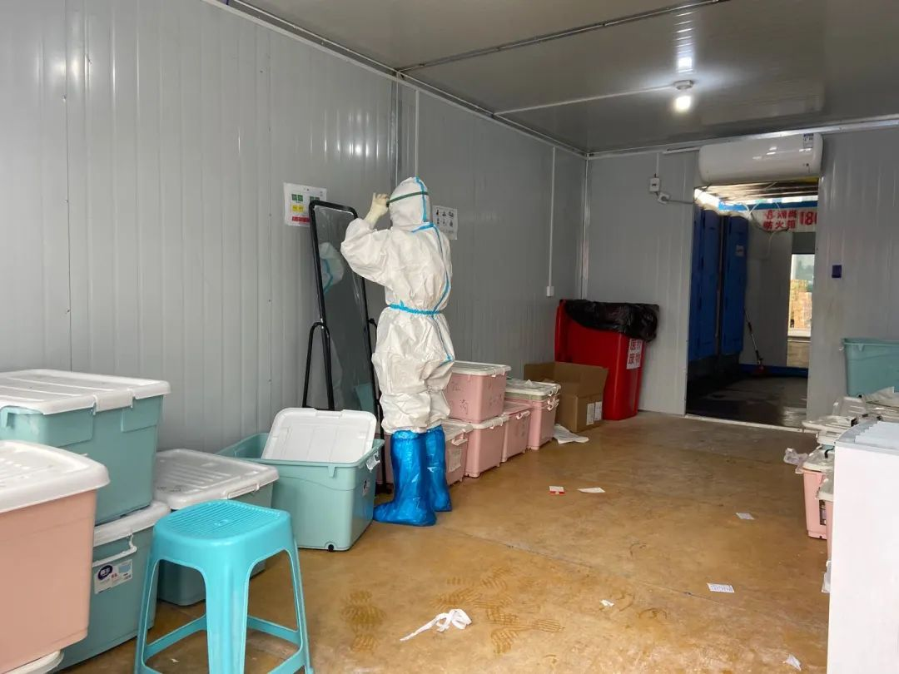
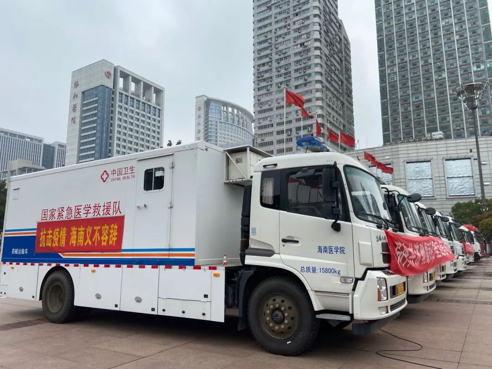

方舱医院里“跳舞姐”越来越多，但仍缺心理医生
原文链接 备份链接 澎湃新闻记者 赵思维 发自武汉 2月6日下午，江汉方舱医院内，一名协和医院的女护士轻声播音一段初来的问候。来源：@武汉发布(01:17) “初来陌生的环境，您可能不太适应，甚至感到紧张或焦虑，我们能够理解。希望大家能跟 …
澎湃新闻记者 赵思维
运行一个多月后，武汉首批三家方舱医院之一的“江汉方舱医院”将正式休舱。

3月9日上午，江汉方舱医院外，两名负责院感的医护在舱外留念。她们已在此工作一个月。
3月9日上午，澎湃新闻（www.thepaper.cn）从接管江汉方舱医院的华中科技大学附属协和医院主要负责人处获悉，江汉方舱医院2月5日晚开始投用，3月9日下午，最后一批患者将康复出舱或分流至定点医院。江汉方舱医院也将同时正式休舱，医务人员休整待命。

3月9日上午，江汉方舱外，前来支援的省外医疗队帐篷里物资已基本清空。
最高峰时，武汉有16家方舱医院运行，至3月9日，这些方舱医院共收治新冠肺炎轻症患者12000多人。江汉方舱医院休舱后，武汉市尚在投用的方舱医院，只剩武昌方舱医院、江夏方舱医院。
东西湖方舱医院、武昌方舱医院、江汉方舱医院，是武汉首批建设的方舱医院。江汉方舱医院位于武汉国际会展中心，从2月3日晚开始改造建设，2月5日21时许开始收治患者，为武汉最先投用并收治患者的方舱医院。

3月9日上午，江汉方舱医院医护通道外，医护和执勤工作人员在坚守最后一班岗。
江汉方舱医院院长、华中科技大学附属协和医院党委副书记孙晖介绍，江汉方舱医院由华中科技大学附属协和医院进行日常管理，总床位数1564张，先后有20支外省支援湖北医疗队，以及武汉市5家医院的医护人员与协和医院医护团队在该方舱医院共同合作。
3月1日，湖北省新冠肺炎疫情防控工作指挥部第36场新闻发布会上，孙晖曾介绍，当时江汉方舱医院共有工作人员1153名，是武汉市“开放床位最多、累计收治病人最多、累计出院人数最多的方舱医院。”

3月9日上午，江汉方舱医院医护通道内，一名负责院感的医护在整理护目镜。

3月9日上午，在江汉方舱医院外广场上，停放的海南医学院紧急医学救援车
此前，国家卫健委医管中心副主任翟晓辉在接受媒体采访时表示，随着疫情变化，武汉市定点医院的床位数已经空出了近万张，力争在3月10日左右，所有方舱医院全部休舱。“如果随着疫情变化，还是先收治到定点医院去，定点医院如果解决不了，我们再启动方舱。”
戳这里进入
“全国新型冠状病毒感染病例实时地图”↓↓↓
本期编辑 常琛
推荐阅读


原文链接 备份链接 澎湃新闻记者 赵思维 发自武汉 2月6日下午，江汉方舱医院内，一名协和医院的女护士轻声播音一段初来的问候。来源：@武汉发布(01:17) “初来陌生的环境，您可能不太适应，甚至感到紧张或焦虑，我们能够理解。希望大家能跟 …
原文链接 备份链接 作为一家改制后的非公医院，汉阳医院在武汉疫情中所面临的考验更为严峻。 在承担大量救治工作之后，医疗防护物资没有得到政府正规渠道下拨的保障。有一天，20个医生一个口罩也没有。 与公立医院一样，非公医院一样面对疫情， …
原文链接 备份链接 跳广场舞、练瑜伽、打太极、复习备考……每天我们都能从社交媒体上了解到武汉“方舱医院”内患者们的日常生活。这些看似平常的活动，却为紧张的抗疫工作带来了一丝活力与鼓舞。 2月3日晚，武汉市宣布将在武汉国际会展中心、洪山体育 …
原文链接 备份链接 基层工作的压力不断加大2月6日，武汉市蔡甸区人民医院的重症病房。摄影/长江日报 陈卓 武汉战“疫”的攻坚时刻 *本刊记者/刘远航 李明子 黄孝光* 发于2020.2.24总第936期《中国新闻周刊》 雷暴与风雪相继到 …
原文链接 备份链接 层层战略部署之后，武汉保卫战已经开始。这是一场与病毒和传染源赛跑的立体战役。 要想打赢这场战役，我们需要在时间上，跑在病魔之前，调集重兵，救治患者；在空间上，则要寻遍传染源，斩断传播途径，将其隔离。 《三联生活周刊》 …